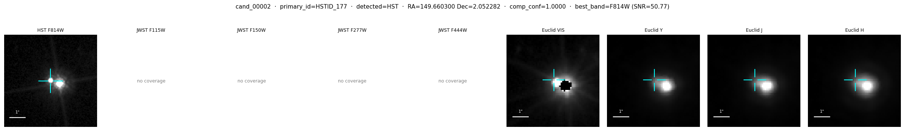
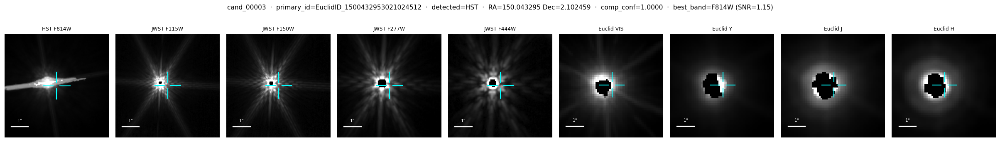
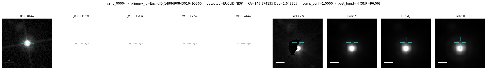
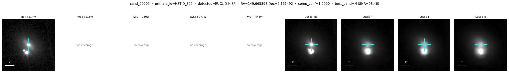

v01 — top 5 SN candidates — visual inspection
Generated 2026-05-27 10:09:08
— from tbl_sn_candidates_v01.csv (4,960 candidates total).
Note on v01: this run had a labeling bug (all 17 known SNe were marked positive in every survey, instead of only their discovery survey). Top candidates are likely dominated by host-galaxy false positives. v02 with corrected per-survey labels is pending.
Each row: HST F814W | JWST F115W / F150W / F277W / F444W | Euclid VIS / NIR-Y / NIR-J / NIR-H. Cyan crosshair = candidate SN position. 1″ scale bar at bottom-left of each panel.
cand_00001
primary_id = EuclidID_1499984999027691008
telescope (detected by CNN) = HST
RA = 149.9984999, Dec = 2.7690984
hst_tile = 102, jwst_tile = —, euclid_tile = 101547135
best_band = F814W (SNR=11.61); composite_confidence = 1.0000
per-survey CNN P: hst=1.0000, jwst=nan, vis=0.0000, nisp=0.0000
cand_00002
primary_id = HSTID_177
telescope (detected by CNN) = HST
RA = 149.6603000, Dec = 2.0522820
hst_tile = 056, jwst_tile = —, euclid_tile = 101542815
best_band = F814W (SNR=50.77); composite_confidence = 1.0000
per-survey CNN P: hst=1.0000, jwst=nan, vis=0.0000, nisp=0.0000

cand_00003
primary_id = EuclidID_1500432953021024512
telescope (detected by CNN) = HST
RA = 150.0432953, Dec = 2.1024594
hst_tile = 054, jwst_tile = A3, euclid_tile = 101542817
best_band = F814W (SNR=1.15); composite_confidence = 1.0000
per-survey CNN P: hst=1.0000, jwst=0.0000, vis=0.0000, nisp=0.0000

cand_00004
primary_id = EuclidID_1498690843016495360
telescope (detected by CNN) = EUCLID-NISP
RA = 149.8741350, Dec = 1.6488270
hst_tile = 031, jwst_tile = —, euclid_tile = 101541376
best_band = H (SNR=96.06); composite_confidence = 1.0000
per-survey CNN P: hst=0.0000, jwst=nan, vis=0.0000, nisp=1.0000

cand_00005
primary_id = HSTID_325
telescope (detected by CNN) = EUCLID-NISP
RA = 149.6653980, Dec = 2.1614920
hst_tile = 068, jwst_tile = —, euclid_tile = 101544255
best_band = H (SNR=98.46); composite_confidence = 1.0000
per-survey CNN P: hst=0.0000, jwst=nan, vis=0.0000, nisp=1.0000
